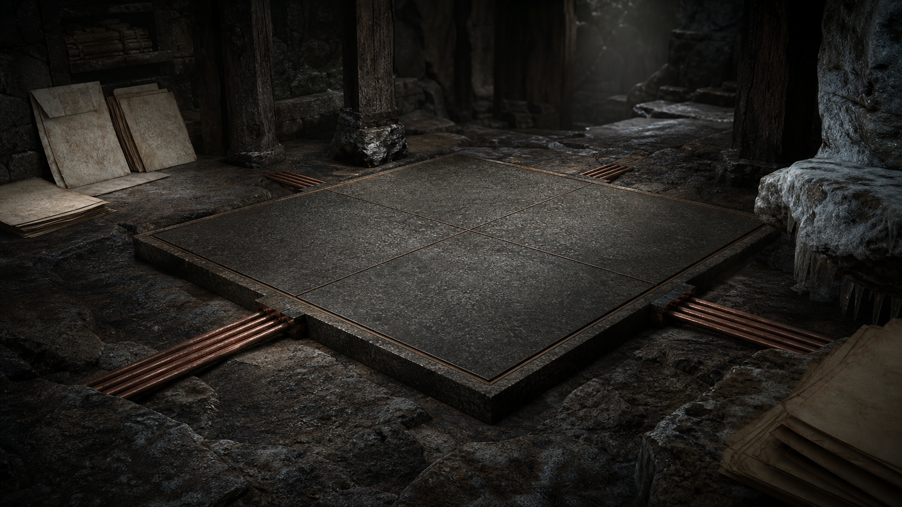

KSA och Korna
Självägande strukturer som behöver begrepp innan de behöver pitch.
Systemet under Sverige
Sidan ska ge en första förklaring av KSA, Korna, släktburen succession, anti-extraktiv ekonomi och framtidsberedning utan att göra systemet till vanlig policyjargong.
öppet fönster
Självägande strukturer som behöver begrepp innan de behöver pitch.
Värde får inte förstås som något som bara hämtas ut.
Sverige behöver kunna fråga utan att automatiskt förenkla.
Lång systemartikel, fem begreppskort, diagram och spärrtext saknas.